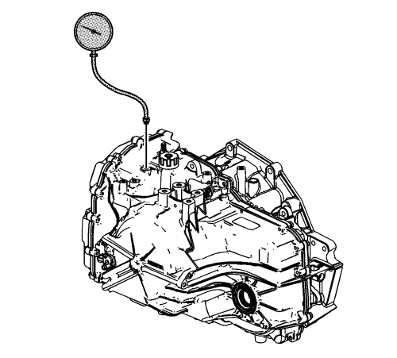

Comprobación de presión de línea
Herramientas especiales
Manómetro EN 21867
Si desea informarse sobre herramientas regionales equivalentes, consultar Herramientas especiales .

Advertencia: Mantenga los frenos activados en todo momento para evitar un desplazamiento inesperado del vehículo. Si el vehículo se desplazara inesperadamente, podría sufrir lesiones físicas.
- Instale una herramienta de diagnóstico.
- Arranque el motor.
- Compruebe si el nivel del aceite del cambio es correcto. Consultar Comprobación del nivel y el estado del aceite del cambio .
- Utilice la herramienta de diagnóstico para comprobar si hay códigos de avería activos o almacenados.
- Compruebe si el varillaje manual del cambio funciona correctamente.
- Apague el motor.
- Extraiga el tapón del orificio de comprobación de la presión de línea.
- Instale el manómetro EN 21867.
- Acceda a los controles de salida del cambio de la herramienta de diagnóstico para el solenoide de PC de línea.
- Arranque el motor.
Nota:
| • | El siguiente procedimiento deberá realizarse al menos 3 veces para recopilar lecturas de presión de línea coherentes y precisas. |
| • | La herramienta de diagnóstico sólo puede controlar el solenoide de PC de línea en ESTACIONAMIENTO y PUNTO MUERTO con revoluciones del motor inferiores a 1.500 r.p.m. Esto protege los embragues de altas o bajas presiones de línea extremas. |
- Utilice la herramienta de diagnóstico para aumentar o reducir el solenoide de PC de línea en incrementos de aproximadamente 100 kPa (15 psi.). La herramienta de diagnóstico ordena los valores de incremento automáticamente.
- Deje que la presión se estabilice entre los incrementos.
- Compare las lecturas de presión de la herramienta de diagnóstico a las indicadas por el manómetro EN 21867.
- Si las lecturas de presión varían considerablemente, consulte Alta o baja presión del aceite .
- Apague el motor.
- Extraiga el manómetro EN 21867.
Precaución:Consulte Precaución con las fijaciones en la sección Prólogo.
- Monte el tapón del orificio de comprobación de la presión de línea. Apriete el tapón del orificio de comprobación de la presión a 12 N·m (106 lib. pulg.).
| © Copyright Chevrolet. Reservados todos los derechos |